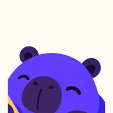
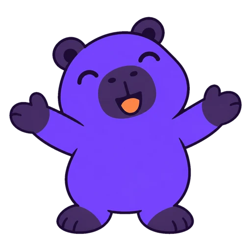
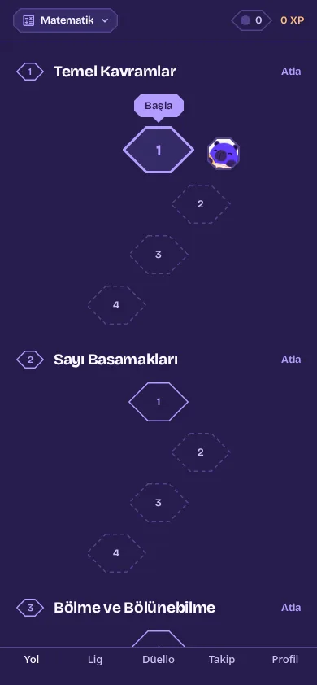
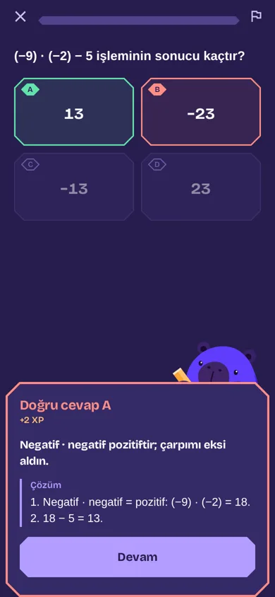
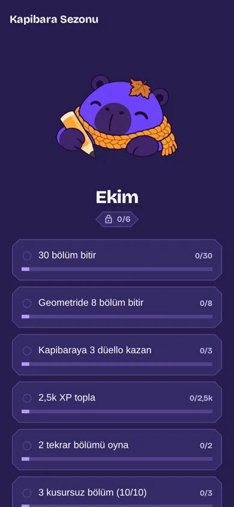

kapabil İndirCan yok. Soru sınırı yok.
Reels yerine 10 soruluk bir bölüm. Kupa topla, arkadaşına canlı düello at, kapibara seninle çalışsın.


Kolaydan zora, ünite ünite

Hatanı söyler, çözümü gösterir

Her ay yeni kıyafet